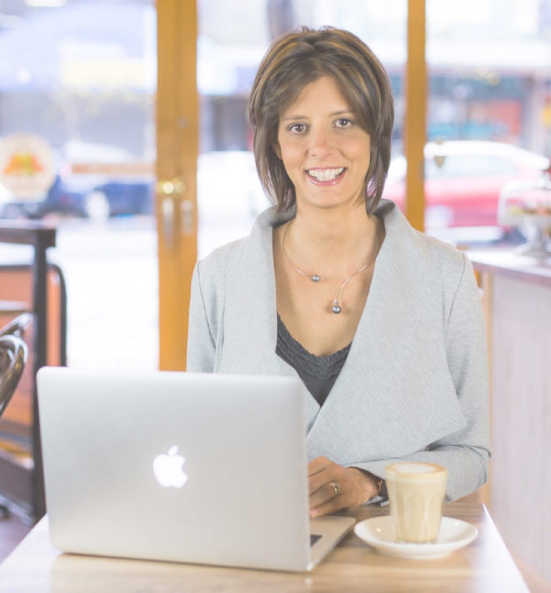

Creativity
with purpose.
Design that earns the click
with purpose.
Dora
Hi, I'm Dora, a digital product & customer experience manager in Melbourne. I blend marketing creativity with data and tech to build websites and journeys people enjoy using, and that businesses can measure.

I bring digital product, content and web strategy together to improve customer journeys, strengthen acquisition and turn customer insight into measurable growth.
My experience spans traditional and digital marketing, freelance work with SMEs, agency web and digital project management, and digital product ownership in a global B2B organisation. That breadth helps me connect customer needs with business goals, and understand how content, channels, technology and customer experience work together.
I'm into sport and an active outdoor life with my family and our two boys. The same habits carry over to work: show up consistently, measure progress, keep improving.
Enterprise product work and agency delivery. Each started with a business problem and ended with something measured.
I tested a new value proposition and landing page against the existing experience to find out which moved more businesses through the application. Across about 27,500 visitors in 14 days, the new version lifted completed applicant details by 28%.
I helped build a dashboard that tracks prospects from their first website visit through lead capture and application. The full-funnel view shows teams where people drop off and what to improve next.
I redesigned the lead process end to end, from website enquiry to Salesforce reporting. Stronger lead validation, cleaner data and a clearer handoff between marketing and sales cut duplicate leads by about 90%.
Analytics, heatmaps and stakeholder feedback showed where applicants were dropping off. I coordinated website improvements, lead validation and Salesforce integration, lifting conversion by about 20%.
I led search improvements across technical SEO, content and internal linking, strengthening the brand's visibility in Google and in AI-assisted search.
I coordinated the digital launch, bringing the online proposition, website content, customer journey, technical delivery and testing together for go-live.
I've led website and digital projects from discovery and requirements through design, development, testing and launch, coordinating clients and multidisciplinary teams and keeping scope, timelines and delivery on track.
I work directly with business owners, including Sports Conscious, on website builds, landing pages, SEO, paid media, email and social, using GA4 insights to lift engagement, leads and in-store sales.
I bring a designer's eye to every project, from wireframes and page layouts to campaign creative and social content, so ideas move quickly from brief to something people can see and react to.
Customer journeys, wireframes and user flows that make the next step obvious, shaped by analytics and heatmaps rather than guesswork.
Clean, on-brand page layouts and landing pages that are easy to scan and built to convert.
Campaign creative, social posts, digital ads and marketing collateral with a consistent brand look, designed in Canva and ready to use.
Enterprise B2B product ownership, agency web and product delivery, and hands-on freelance marketing for small businesses.
Owned the ANZ acquisition journey across six enterprise websites, from search discovery to submitted application and Salesforce lead.
Led delivery of client websites, apps and digital products, and managed a studio team of five.
Managed client website projects from first brief to launch and ongoing optimisation.
The business's go-to marketing lead for over eight years, owning every marketing initiative across digital and traditional channels, from strategy through to final artwork.
Hands-on digital marketing and web delivery, working directly with business owners to grow their business.
Committee member of an accredited community language school, running team logistics, stakeholder communication and community outreach.
Most marketers lean creative or technical. I work across both, from the big idea through to the tracking tag that proves it worked.
I take on contract and project work alongside permanent roles. You work directly with a strategist who also does the work, without paying for an agency.
A recognition Daniel, my Sales Manager, sent me at work. I'm proud of this one because it's about how I work, not only what I deliver.
Dora is a high achiever whose impact speaks louder than words. Thank you for consistently being super helpful, tackling tasks quickly, and approaching every challenge with a calm confidence. Your willingness to lend a hand no matter how big or small the request doesn’t go unnoticed. Your dedication, reliability, and humble excellence make you a true silent superstar. I appreciate you!
Hiring for a digital product, website, CX or marketing operations role? Need help with a project? Send me a note and I'll get back to you.
coffee's on me ✎